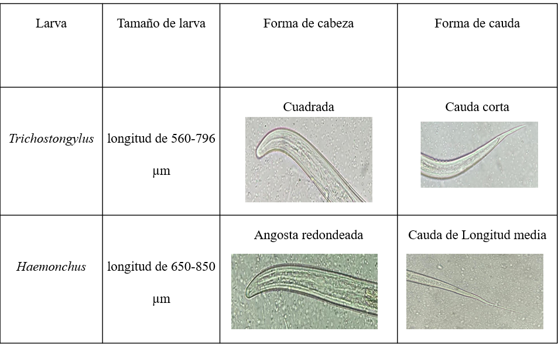

Nota. a. Boca. b. Esófago. c. Corpus. d. Istmo e. Bulbo. f. Comienzo de sistema digestivo. (Bowman, D. 2014).
La identificación de las larvas se llevó a cabo tomando en cuenta características como la forma de la boca, forma de cauda y su forma en el extremo distal, estas son algunas de las características que Silva, H. (2018) también tomó en cuenta en su investigación para realizar la identificación de las larvas.
Adaptado de La Organización de las Naciones Unidas para la Alimentación y la Agricultura (s.f)